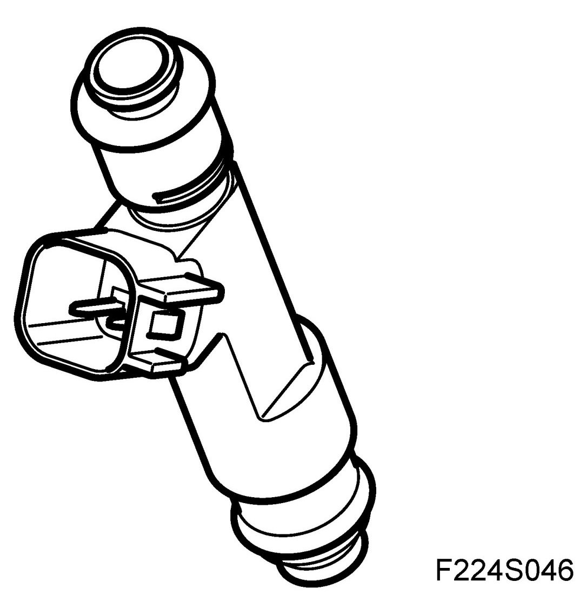
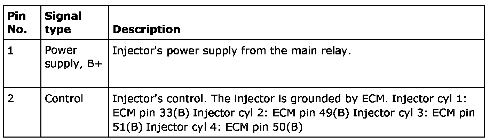
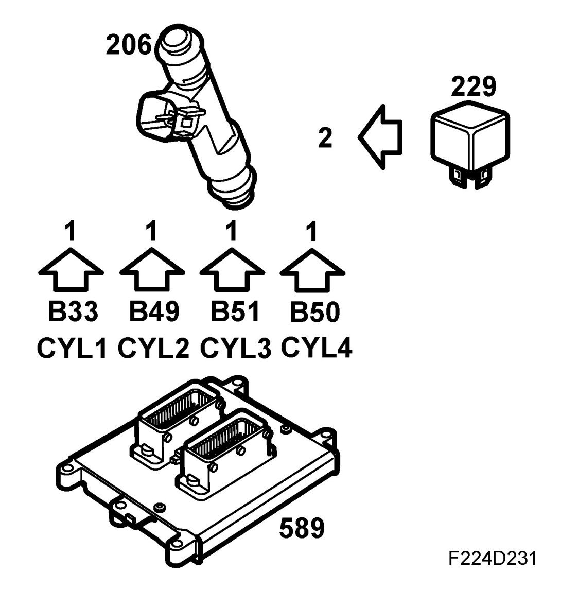
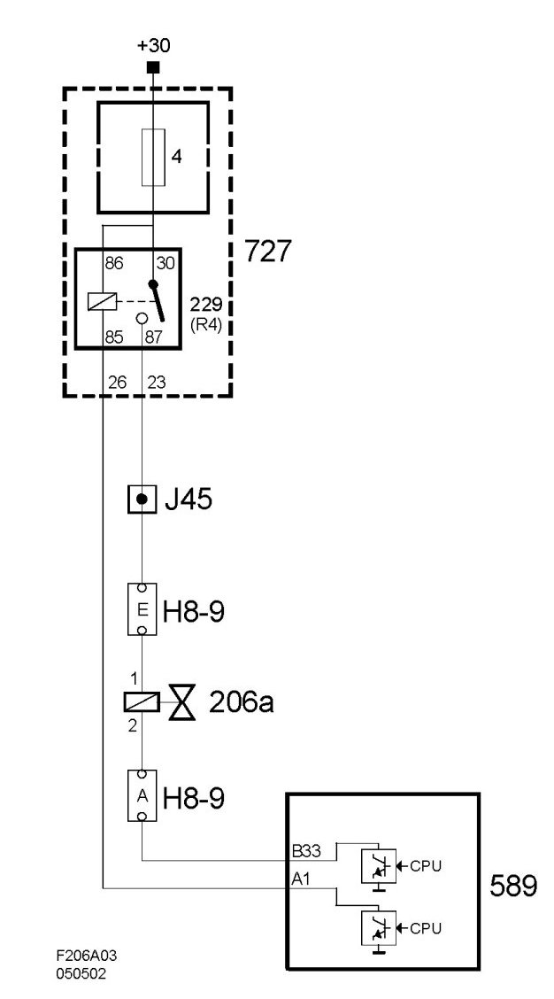
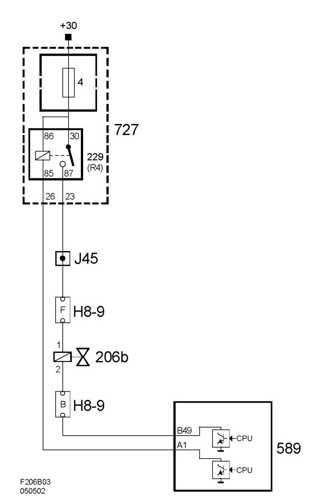
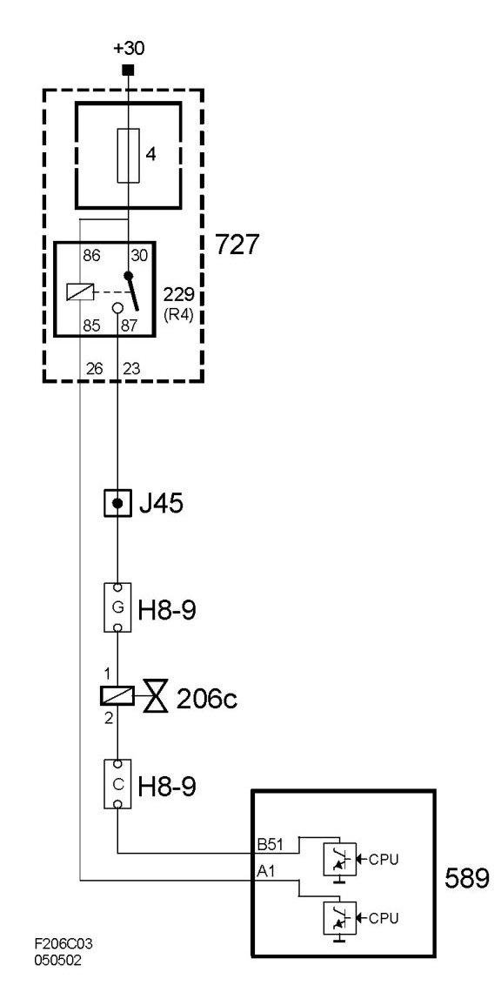
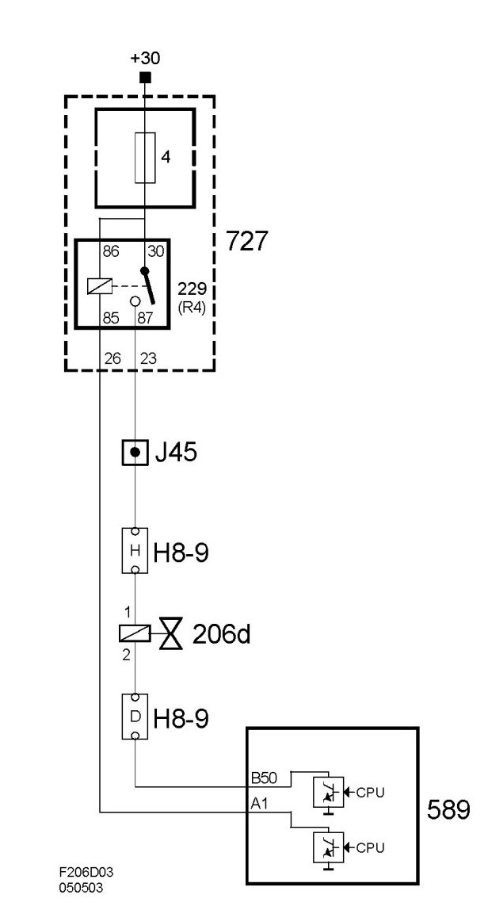

Injector (206), T8
Injector (206), T8
Location
- Injector, cyl 1 (206a)
- Injector, cyl. 2 (206b)
- Injector, cyl. 3 (206c)
- Injector, cyl. 4 (206d)
Main task
Adds fuel to the air streaming into the cylinders. Distributes the fuel in the combustion chamber.
Type
The injectors are solenoid type with needle and seat. They open when current flows through the coils and close with the help of a strong spring when current is interrupted.

Connection


To achieve optimal combustion and thereby cleaner exhaust, the location and spray pattern of injectors is very important.
Do not turn the injectors. The connectors should point straight up. Otherwise, streams of fuel will hit the walls of the intake channels, which affects emissions and driveability.
Wiring diagram, injector 1 (206a)

Wiring diagram, injector 2 (206b)

Wiring diagram, injector 3 (206c)

Wiring diagram, injector 4 (206d)
